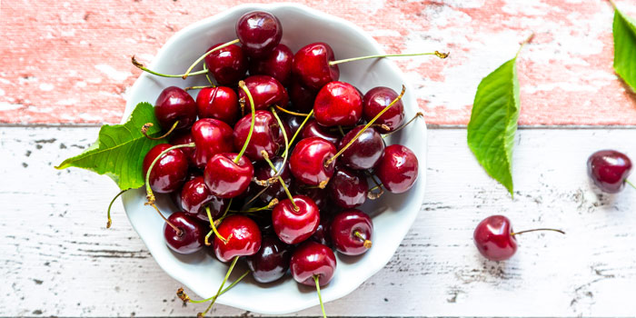

1 / 3
2 yummy plums! My favorite fruit.
2 / 3

Deep red cherries, another tasty fruit.
3 / 3

Some mangoes that are nice and juicy.
I am a girl who enjoys dancing from Scotch Plains, NJ. I will be in the 12th grade in the fall, and I am looking forward to applying to colleges. Some choices I have looked at already include Temple University, UMBC, Howard University, and North Carolina A&T. I live at home with my mom and dad. My sister is currently in college so she no longer lives at home with us. When I'm not dancing, I like to keep up with what is going on in the NBA and hanging out with my friends.
Likes: My all-time favorite show is Dance Moms. My favorite dancer has changed constantly but my favorite group dance will forever be The Rose Garden YouTube .
Dislikes: My least favorite food will forever be mashed potatoes. I also really hate caramelized onions and most baked goods.
Fun Fact: I have developed severe knee issues so I have to get knee injections each month for 8 months.
Extra Stuff: Here's a quick slideshow of some of my favorite fruits! (Scroll to the bottom and click arrows to activate the slideshow.)